异常提醒
集中接收任务失败、超时、等待过久和预算提醒，分别跟踪处理与恢复情况。
生成大纲与课节，来源可核对，内容可编辑。
基于课程资料答疑并附来源引用，配合练习、错题与续学。
企业／课程配额与预算提醒，主备及 OCR 接口按需配置。
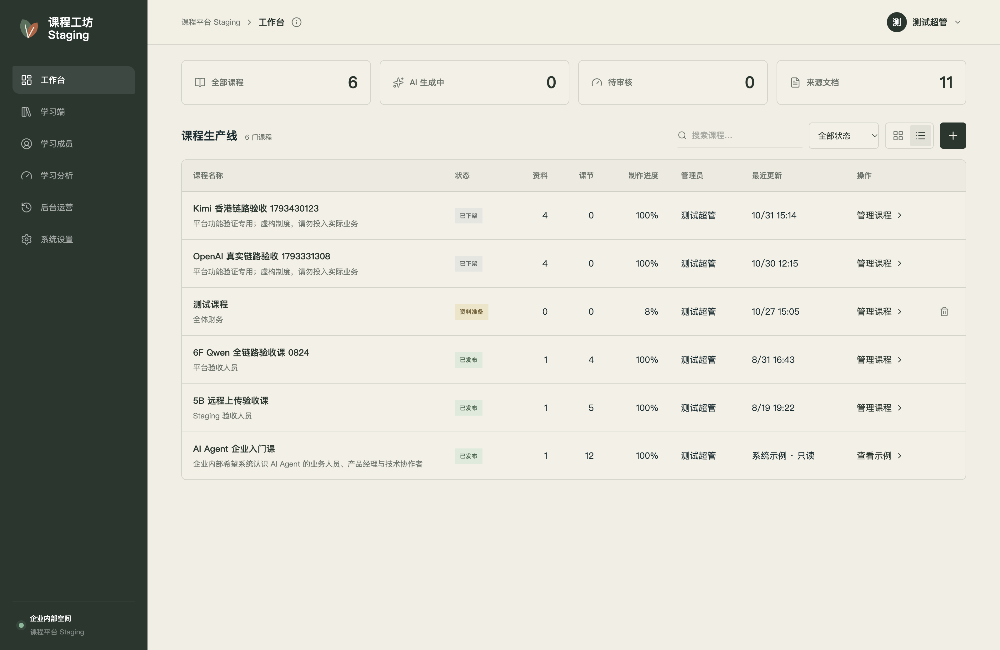
课程制作与学习
支持 PDF、扫描件、Word 和 Markdown。根据企业资料生成学习目标、课程大纲和课节内容，保留来源信息，方便核对。
课程内容可核对，
培训资料可复用。
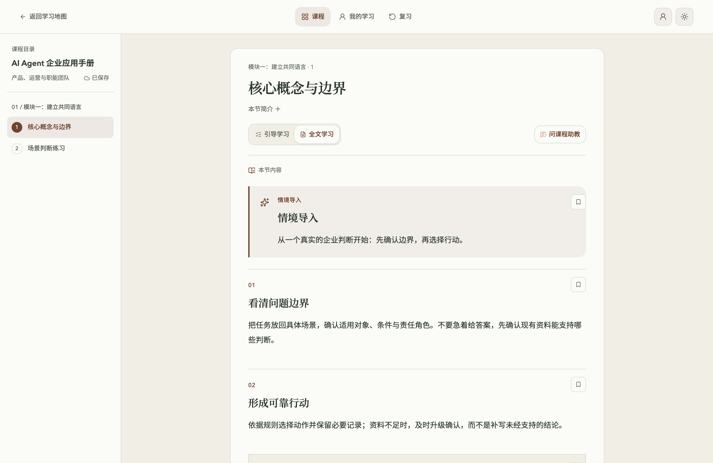
课程内容、互动练习与测验集中呈现。员工可以接着上次的进度学习，也能通过 AI 助教查询课程资料、核对引用依据。
平台运营管理
集中查看任务异常、操作记录、使用额度与清理进展，便于日常管理和问题排查。
集中接收任务失败、超时、等待过久和预算提醒，分别跟踪处理与恢复情况。
按课程、操作人和操作编号查询记录，查看关联任务与调用详情。
按企业或课程设置请求次数上限，查看 Token 消耗和费用估算。
按规则清理过期凭据与限流记录，清理前预览，执行后保留记录。
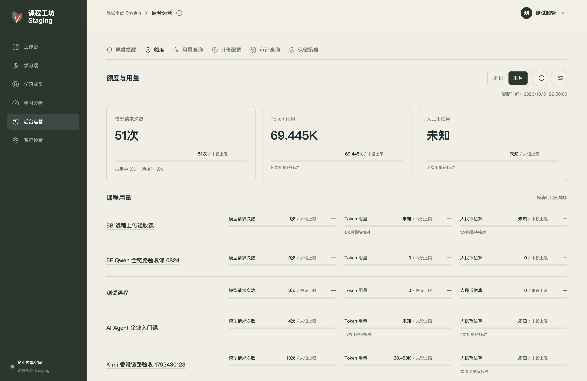
为登录会话、恢复码和限流记录分别设置保留天数，支持立即或预约生效。
清理前可预览范围，确认后分批执行。课程资料、学习档案和审计账本不在清理范围内。
查看授权说明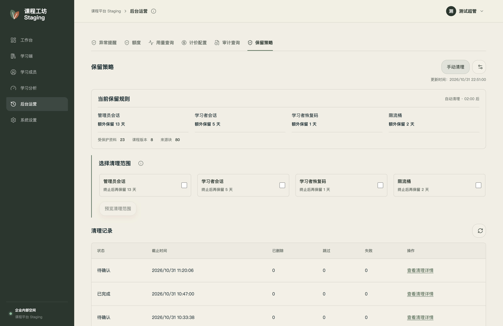
多主题学习空间
为课程学习首页配置品牌配色与视觉主题。点击图片查看大图。
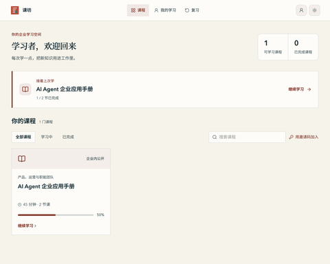
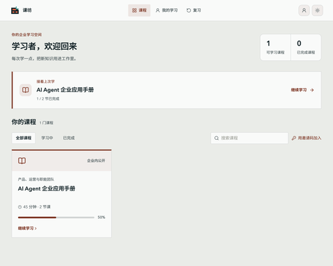
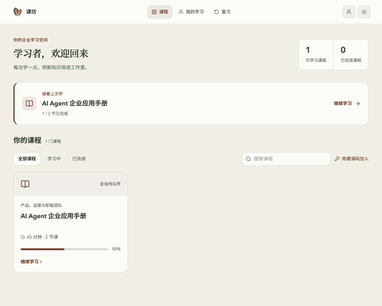
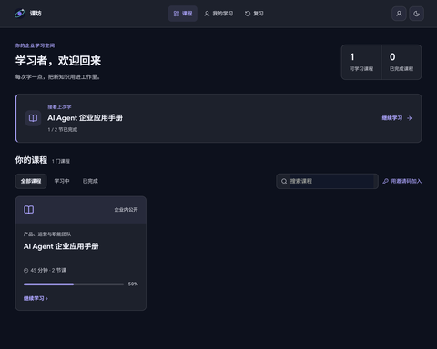
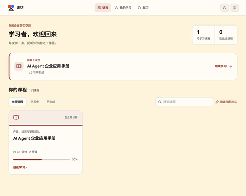
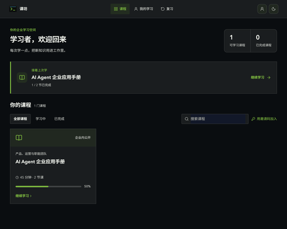
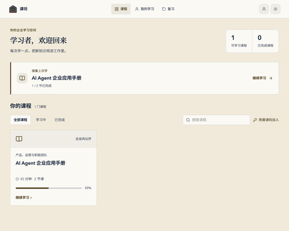
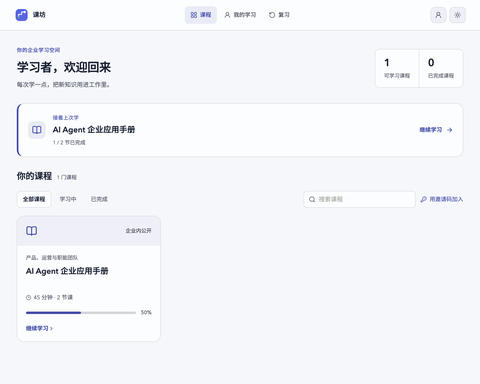
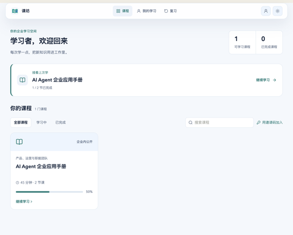
企业定制服务
围绕企业品牌、培训内容、身份认证和运营规则，按需配置与扩展。
企业使用与授权
课坊平台尚未开源。欢迎企业和团队邮件联系作者 Evan Song，
说明培训场景、使用规模与定制需求，沟通使用授权及实施方案。